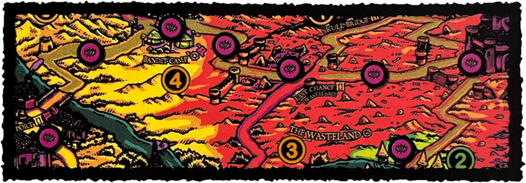

CARAVAN THROUGH THE BADLANDS
Desperate for new food sources to replace the herds of livestock rendered inedible by the blight ravaging the Highlands, the guilds & gangs are paying scouts to travel the Badlands & establish trade treaties with goblins & the remnants of human tribes scattered across the North.
SETUP
These Settlements Ė represent potential trade hubs on the caravan route.
| Ġ Bandit Camp | Ġ Goblin Fortress |
| Ġ Gutfish Ford | Ġ The Watchtower |
OBJECTIVE
You must create a continuous chain of adjacent Explored ġ counters connecting Pigskin Port with at least 2 Settlements Ė marked with Clue Ġ counters & at least one of these must be outside the Highlands. Rest at Pigskin Port or at your Base Ī with the unbroken Explored ġ chain in place to complete the mission.

In the example above, Pigskin Port is 'connected' to the Goblin Fortress with a continuous chain of Explored ġ counters. Gutfish Ford is not connected to this chain because there is no Explored ġ counter between the Goblin Fortress & Gutfish Ford.
The river does not provide adjacency (the Watchtower is not 'adjacent' to Gutfish Ford, for example). If the Hand of Doom is placed in an Explored ġ space during this mission, you must remove the Explored ġ counter from that space.
REWARD
Each adventurer gains 1 Luck Ğ & your employers pay D6 GPĎ for each Settlement Ė connected by the route (including Pigskin Port) - this must be divided amongst the party as evenly as possible. If there are any Merchants in the party, the Merchant with the highest MRL may take the Importer Triumph card.
Remove 1 Doom ğ counter from the Doom track for each Settlement connected on the route (including Pigskin Port, but not including any Settlements Ė not marked with Clue Ġ counters). The Doom counter's color must match the Settlement's Region.
For example, if you connected Pigskin Port to the Bandit Camp & Goblin Fortress, you may remove 1 red & 2 yellow Doom ğ counters.
MISSION PATH
Did you rest at Pigskin Port?
[Badlands & Beyond] As you navigate the unfamiliar streets of Pigskin Port, an old man catches your eye, staring at you with a peculiar intensity. Will you talk to him and venture İInto the Unknown?
Take advantage of the information you've gathered to wage İWar on Goblins, or do what you can to İUnify the Highlands in preparation for the greater war to come.
Aside from these considerations, you've heard of two other problems in your surroundings:
[Missions II] On one hand, the Windmill, a historical heritage of the Würstreich, is the target of unknown activists, proceed to İGive me Fire if you want to investigate it.
[Missions III] On the other hand, it seems that Lord Scrott is actively distributing flyers to bring some İRevelation to the people, and you may try to stop him.